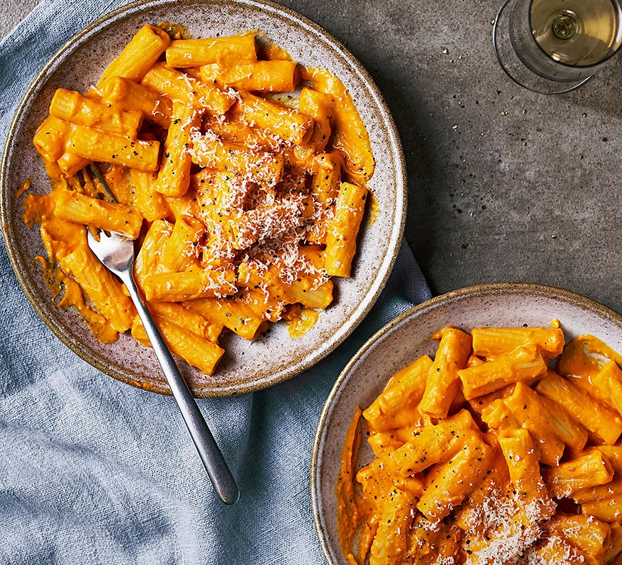

Autumn Pumpkin Pasta

Description
Make the most of pumpkins this autumn. When puréed and combined with mascarpone and parmesan, their flesh transforms into a silky, delicious pasta sauce.
Ingredients
- 2 tbsp olive oil
- 1 onion, finely chopped
- 2 garlic cloves, crushed
- 500g pumpkin or squash, peeled and cut into roughly 3cm cubes
- 50-100ml whole milk
- 2 tbsp tomato purée
- 2 tbsp mascarpone
- 350g short pasta (rigatoni or penne work well)
- 40g grated parmesan or vegetarian alternative, plus extra to serve
Steps
- Heat the oil in a large, shallow, flameproof casserole or frying pan over a low-medium heat and fry the onion with a pinch of salt for 10-15 mins until softened and translucent. Add the garlic and fry for 1 min more. Remove from the heat and leave to cool slightly.
- Meanwhile, cook the pumpkin in a pan of boiling salted water for 10-15 mins until tender when pierced with a cutlery knife. Drain and tip into a blender (or use a hand blender). Blitz with 50ml milk and the onions until completely smooth, gradually adding more milk until the mixture is thick enough to just coat the back of a spoon (you may not need all the milk). Tip into a large frying pan with the tomato purée and mascarpone, and bring to a simmer over a low heat.
- Cook the pasta in a large pan of boiling, salted water following pack instructions. Drain, reserving a cupful of the cooking water. Toss the pasta with the pumpkin sauce, parmesan and 50-100ml of the reserved water to loosen. Season and scatter with extra parmesan.